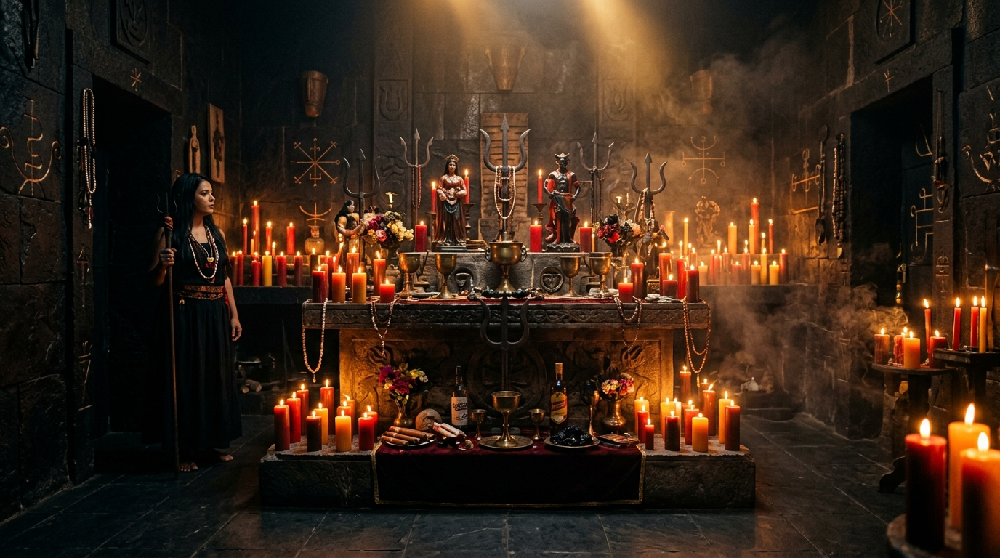

Sob a direção espiritual de Táta Rodrigo de Padilha. Alta magia tradicional, firmezas nos 7 Reinos e rituais de grande potência: Oráculo de Exu, Aliança de Prosperidade com Lúcifer, Abertura de Caminhos, Amarrações Amorosas, Limpezas Espirituais, Proteção e Destruição de Inimigos.

O TEMPLO DE KIMBANDA MALEI MARIA PADILHA DAS ALMAS E EXU TRANCA RUA é uma instituição religiosa oficial, filiada pela LEUCAB (Liga Espiritualista de Umbanda e dos Cultos Afro Brasileiros) sob o Reg. Nº 2784.
Comandado por Táta Rodrigo de Padilha, o templo preserva a vertente mais poderosa e temida da Kimbanda Malei. Aqui não existe meias verdades: trabalhamos com a força do ferro, do fogo e da terra para resolver causas urgentes, alianças de riqueza, corte de rivais e restauração da autoridade dos nossos consulentes.
"Na Kimbanda Malei de Maria Padilha e Tranca Rua, o inimigo tomba, o caminho abre e quem tem nossa proteção nunca anda derrotado."
— Táta Rodrigo de PadilhaCasa registrada sob o Nº 2784 na Liga Espiritualista de Umbanda e Cultos Afro Brasileiros, atestando legitimidade e fundamentação.
Trabalhos firmados no cruzeiro, na encruzilhada e nas almas sob o comando direto dos guardiões de coroa do Táta.
Total discrição e confidencialidade nos atendimentos para empresários, comerciantes, casais e consulentes de todo o país.
Da amarração amorosa à destruição e derrota de inimigos, rituais executados com precisão sacerdotal e cobrança nos reinos.
Execução de alta firmeza com Exus, Pomba Giras e as Forças Maiores da Kimbanda. Consulte Táta Rodrigo de Padilha para direcionamento e assentamento do seu caso.
Consulta através das lâminas e do oráculo sagrado sob o comando de Exu Tranca Rua e Maria Padilha das Almas. Revela a causa de todo problema, trapaças, demandas e o caminho exato para a vitória.
Ritual supremo nos mistérios da Kimbanda Malei para quem busca riqueza de grande porte, autoridade comercial, contratos milionários e soberania financeira sob o consentimento do Maioral.
Desobstrução enérgica das 7 encruzilhadas do seu destino. Rompimento de marés de azar, portas fechadas no comércio, dívidas constantes e projetos profissionais estagnados.
Trabalho de alta intensidade firmado no caldeirão e nos mistérios de Pomba Gira Maria Padilha das Almas para amarrar, dobrar orgulhos, reatar casais e blindar contra amantes e intromissões.
Descarrego severo com ervas de Kimbanda, pólvora, cachaça de fundamento e ferro para quebrar feitiços enviados, olho gordo, queimações de vela contra você e retirar espíritos obsessores.
Fechamento de corpo e assentamento de guardião na força de Exu Tranca Rua. Cria um escudo intransponível contra traições, tragédias, assaltos e ataques espirituais covardes.
Trabalho pesado executado nos portais da Kalunga e do Cruzeiro para desmascarar, derrubar e esmagar a força de inimigos que tramaram contra sua ruína, sua família ou seus negócios.
A Kimbanda se estrutura em 7 Reinos sagrados de domínio e autoridade espiritual. Conheça as regências trabalhadas por Táta Rodrigo de Padilha.
O reino dos pontos de encontro, escolhas cósmicas, abertura e fechamento de portas. É onde os caminhos da vida física se cruzam com o destino espiritual. Sob sua guarda, todo impasse encontra uma via e toda trava existencial é rompida com autoridade.
"Laroyê Exu Tranca Rua! Saravá Maria Padilha das Almas!"
Concentre-se na sua questão mais urgente e toque na lâmina sagrada para receber o conselho da Kimbanda Malei.
Selecione seu objetivo para Táta Rodrigo de Padilha analisar seu caso no WhatsApp.
Escolha a opção que melhor define sua situação:
Selecione para prepararmos o atendimento:
Ambas modalidades recebem a mesma força sacerdotal:
Caso catalogado para análise de Táta Rodrigo de Padilha. Envie agora diretamente para o WhatsApp para receber orientações do preceito.
Falar com Táta Rodrigo no WhatsAppA verdade manifestada na vida de quem confiou na força de Padilha das Almas e Tranca Rua.
"Estava sendo perseguido por sócios corruptos que quase destruíram minha vida financeira. O trabalho de corte e justiça feito por Táta Rodrigo derrubou todos os processos falsos e restabeleceu meu negócio."
"A amarração feita na força de Maria Padilha das Almas foi a única que funcionou de verdade. Em menos de 21 dias a pessoa voltou mansa, apaixonada e pedindo perdão de joelhos."
"Fiz a Aliança de Prosperidade para destravar licitações públicas da minha construtora. O resultado superou qualquer expectativa. Táta Rodrigo é homem de palavra e fundamento."
Sim. Somos filiados pela LEUCAB - LIGA ESPIRITUALISTA DE UMBANDA E DOS CULTOS AFRO BRASILEIROS sob o Registro Oficial Nº 2784, garantindo total legalidade institucional, respeito à tradição e sacerdócio sério.
É um ritual de alta magia da Kimbanda Malei, sem fantasias hollywoodianas. Trata-se de um acordo espiritual sério de atração material, poder, liderança e blindagem contra falências, conduzido diretamente por Táta Rodrigo sob preceito fechado.
Trabalhos assentados na força de Pomba Gira Maria Padilha das Almas acompanham amarração com tranca e lacre espiritual, impedindo que outros sacerdotes ou pessoas interfiram na união do casal.
É um ritual de cobrança suprema entregue na Kalunga e nas mãos de Exus de Justiça. Exige confirmação prévia no Oráculo de Exu para que o fundamento seja irrefutável e sem volta contra o consulente.
Sim. Atendemos diariamente consulentes de todo o Brasil, Estados Unidos, Portugal e Europa através de videochamada pelo WhatsApp, com fotos, vídeos e comprovação da firmeza executada no templo.